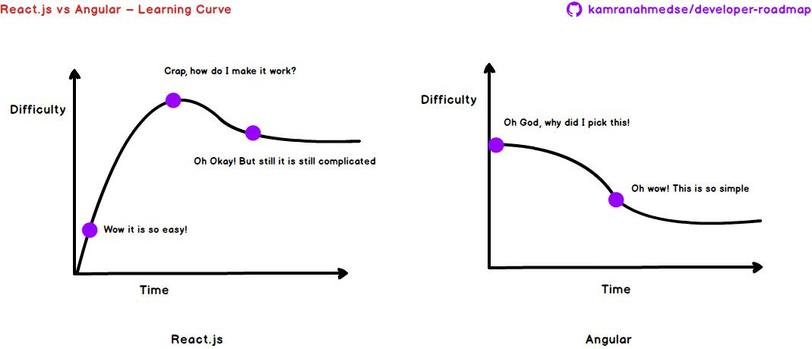

"Angular 一開始的學習曲線雖然與其他框架相比高了些，畢竟它比較囉嗦，開發方式也跟傳統的開發方式大相逕庭。 對於一般習慣傳統開發方式或是剛踏入前端甚至是程式領域的人來說，是滿辛苦、難以理解的。 但渡過一開始的陣痛期與適應了之後，其實是會忽然有一種豁然開朗的感覺！ Angular 跟其他的開發框架不一樣的是，它比較像是一個完整的平台，從開發到測試它都一手包辦，並且擁有豐富的生態系，背後又有 Google 在推動， 甚至就許多公司的立場而言，Angular 有完整、完善的規範與一致的開方式，這才是一個框架、一個平台真正的價值。" --by Leo
Angular 的主要架構就是一堆的 Components。 不過當然，組成 Angular的東西還包含 Module、Template、Metadata、Data Binding、Service、Directive、Dependency Injection，從左邊這張圖可以清楚看到彼此的關係。
"首先先看左圖最中間那一塊，是由template、metadata、component所構成的，這三個是一個component必備的元素。 在 Angular 的世界裡，Component 負責定義與控制畫面，令其可以根據資料和程式邏輯呈現相對應的畫面。" --by Leo
"在 Angular 2 中，一個 Module ( 模組 ) 是一個把彼此互相關聯的 components、directives、pipes 和 services 整合的機制。然後這個模組可以再和其他模組結合，最後就形成我們的網頁應用程式。 --by 微中子
"Angular 的路由機制靠的是我們放在 Template 裡的路由插座 - router-outlet 。 路由插座有點像是定位點的概念，我們只要把我們需要切換顯示的區塊裡放入這個路由插座，Angular 的路由機制就會將找到的路由設定裡要顯示的 Component 插入，進而達成換頁的效果。" --by Leo